カモミールが咲いていました。
2024/05/05
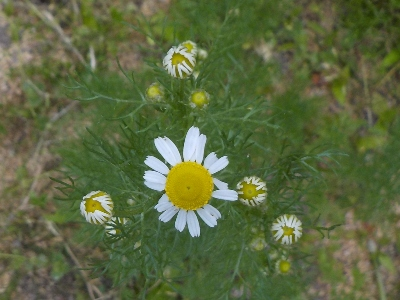
まだ花が少ないので香りがあまりしていません。
これからちょっと楽しみです。
2024/05/05

まだ花が少ないので香りがあまりしていません。
これからちょっと楽しみです。
2023/05/13
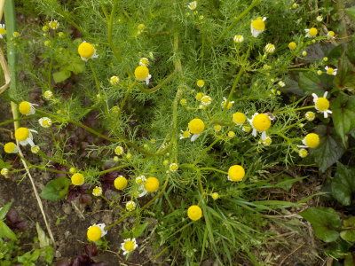
去年の種が落ちて今年も花が咲いています。
使わないので収獲しません。また種が落ちで来年育つでしょう。
2022/06/29
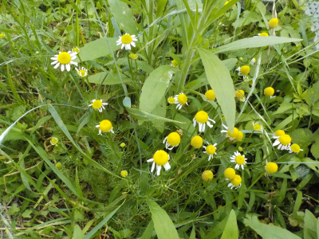
ほとんどのカモミールは花が終わったんですが、草刈りで切ったものが今頃成長して開花していました。
成長中に切ったら開花を遅く出来そうです。（やらないけど。）
カモミールはコンパニオンプランツになるって書いてある本を先日読みました。役に立ちそうなので秋になったら種を蒔こうと思っています。
2022/05/14
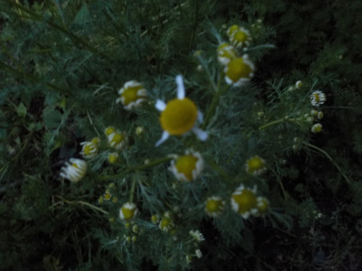
暗い中カモミールの写真を撮りました。
ピントが合っていませんね。こうゆうのが綺麗に撮れたらインスタに上げるといいんだろうな。
2022/03/13
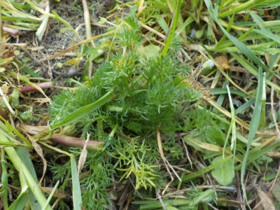
草が伸びたので鎌で刈っていたらカモミールが出てきました。
もうちょっと大きかったら刈ってましたね。
でもここは歩くばしょなので踏んじゃうな。
2021/05/02
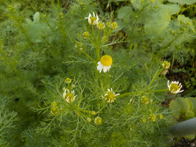
去年、一昨年にカモミールを植えたので、今年は落ちた種があちこちで育っています。
沢山育っているので沢山収獲できそうなんですが、カモミールティーは飽きました。
もう飲みたくないので収獲はしないつもりです。
2020/06/07
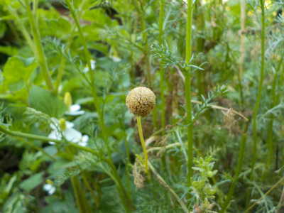
花を収穫しているんですが、採るタイミングを逃してしまったものは来年用の種にしています。
勝手に飛んで、勝手にどこかで生えるでしょう。
2020/05/17
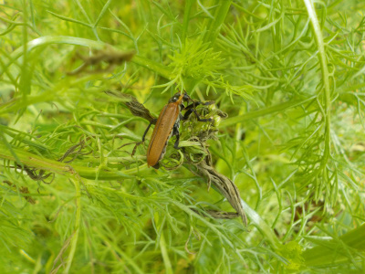
カミキリって草にもつくんですね。
雑草を食べてくれればいいのに。
2020/05/10
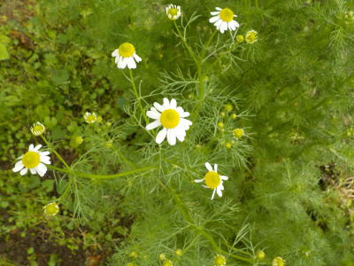
カモミールが咲きましたが、まだ花が少ないので観賞だけにしました。
ちょっとだけ採るのって面倒です。
2020/03/14
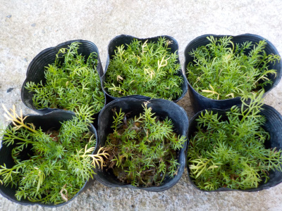
ポットで育てた苗を地植えにしました。
小さい苗を分けて植えるのって面倒ですね。
やってて途中で嫌になり止めました。残りは来週植えます。
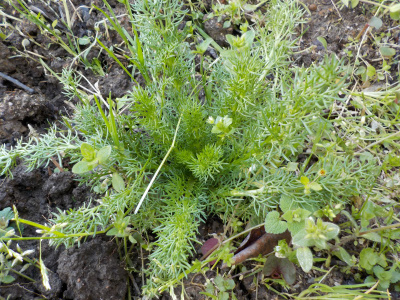
去年の10月に植えた苗は半分以上消えましたが、残ったのはこんな感じの大きさです。
秋に地植えした方が大きくていいですね。
苗を植えるのは面倒なので、次からは秋に地面に種を直接蒔こうと思います。
2019/10/27
地植えにしたカモミールです。
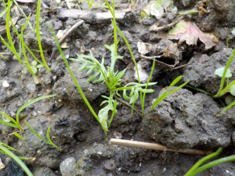
まだまだとっても小さい。
でもカモミールらしい葉っぱの形になりました。
他のまわりの雑草より先に大きくなって欲しいです。
2019/10/06
水耕栽培で大きくした苗を畑に植えました。
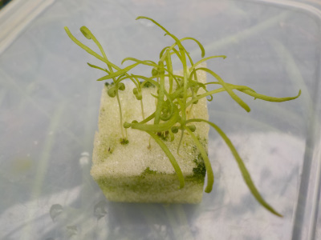
スポンジの中に根っこが入り込んでいて、取り外す時に根っこがブチブチ切れました。
大丈夫かな？なんか枯れそう。
スポンジで大きくする時は根っこの伸びる方向を気にしないといけませんね。
念のため種もまいておこうかな。
2019/09/14
涼しくなってきたので、プラスチックケース内のポットに種まきしました。
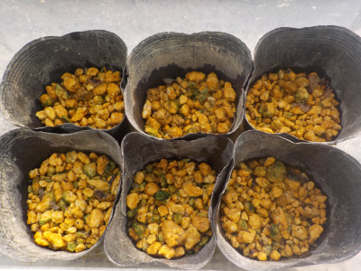
たぶんもう灼熱地獄で煮えることはないと思います。
冬までにどんだけ育つかな？
2019/09/01
なんか簡単に発芽していました。
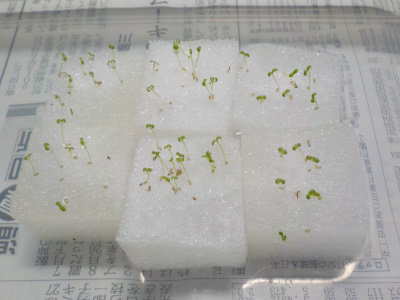
いつ発芽したかは分かりませんが、1週間かからないでこんな感じです。
今後も快調に成長してくれるといいな。
2019/08/27
まだ種まきのシーズンではないですが、屋内なのでいいかな？と思い種をまきました。
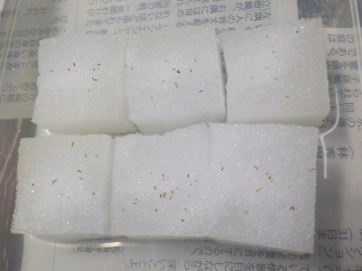
1袋買ったら種が大量に入っていたので、失敗しても大丈夫です。
スポンジの上に小さな種をパラパラとまきました。
発芽はいつかな。
ハーブティー用です。